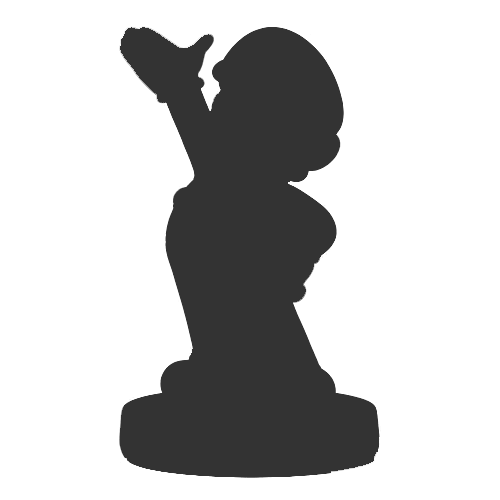

Ainda a venda ;)
O que foi o WiiU:
O Wii U foi um console de videogames doméstico desenvolvido pela Nintendo como sucessor do Wii. Lançado no final de 2012, é o primeiro console de videogames da oitava geração e competiu com o Xbox One da Microsoft e o PlayStation 4 da Sony.
O Wii U foi o primeiro console da Nintendo a suportar gráficos HD. O controle principal do sistema é o Wii U GamePad, que possui uma tela sensível ao toque incorporada, botões direcionais, alavancas analógicas e gatilhos.
Compatibilidade com a Wii
A Wii U é compatível com quase todos os títulos e acessórios para a Wii, permitindo-te continuar a usufruir das tuas experiências preferidas na tua nova consola.
Conteúdos descarregáveis
Se ligares a tua Wii U à Internet estarás a aceder a um vasto mundo de conteúdos, incluindo demos gratuitas*!
Acessórios
Leva a tua experiência Wii U a um novo nível com a vasta gama de acessórios (vendidos em separado) disponíveis. A Wii U é também compatível com uma variedade de produtos periféricos criados para a Wii U.
Os Amiibos
Amiibo é uma plataforma de brinquedos que utilizam comunicação sem fio e protocolo de armazenamento de dados, projetado pela Nintendo para utilização nas plataformas Nintendo 3DS, Wii U e Nintendo Switch.